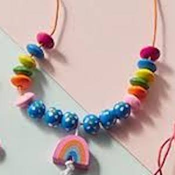
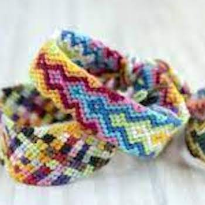

Jewelry Making Club Info
Meeting Times
We will meet Fridays during either activity block or lunch. If there is a different meeting time we'll be sure to let you know via email or Google Classsroom! Our meeting location is still being determined but it will most likely be done in the Upper School Maker Space. The Upper School Maker Space is in the Upper School Library above the admissions building.
Our Club Leaders
The leader of the jewelry club is Sophie Lichten! She is currently a freshman and you can contact her via email (LichtenS25@columbusacademy.org)
More examples of things you can make!

